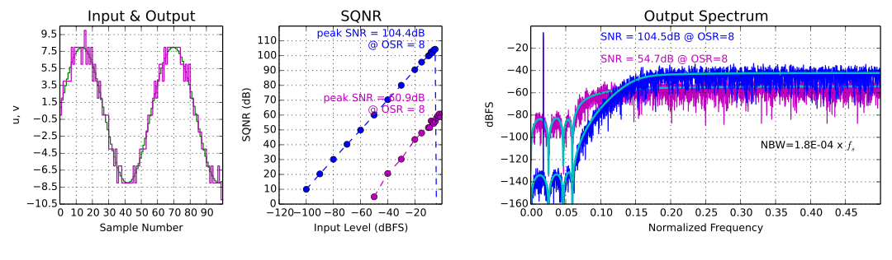

G. Venturini, 2014
The python-deltasigma is an open-source Python package to synthesize, simulate, scale and map to implementable topologies ΔΣ modulators.
It aims to provide a 1:1 Python port of Richard Schreier's excellent MATLAB Delta Sigma Toolbox, the de facto standard tool for high-level delta sigma simulation, upon which it is very heavily based.
Status


The basic functionality has been fully ported!
... but do I need to know Python?
Strictly speaking, yes.
Thankfully it turns out that, if you know how to use MATLAB a bit, getting used to the scientific stack in Python is rather immediate.
Recommended resources to get you started:
- The scientific Python lectures by J.R. Johansson,
- The Numpy for MATLAB users cheatsheet,
- and we provide plenty of examples!
When I was starting this project, I was looking for a programming language that is stable, weakly typed, geared towards numeric codes, free and most important that Just Works!™, so I based everything on the very impressive scientific Python stack.
... tell me more!
To have an idea of the package capabilities, take a look at these IPython notebooks:
- NTF synthesis,
- Simulation of Delta Sigma modulators,
- Realization and dynamic range scaling,
- Audio demo of mod1 and mod2 and audio file, right click, "Save as..." to download,
- Synthesis of a 5th-order, low-pass modulator,
- Synthesis of an 8th-order, band-pass modulator,
- Synthesis of a continuous-time lowpass modulator.
If you have cool examples you would like to share, send me a mail, and I will add them to the above list.
Install python-deltasigma
Using python-deltasigma requires Python 2.6+ or Python 3.3+, numpy, scipy (>= 0.11.0) and matplotlib.
They're all free, and doubly so: free as in beer and free as in speech, just like this package.
Prerequisites: Linux
The python-deltasigma dependencies are packaged by virtually all the major Linux distributions.
On a Debian Linux system, you may install them issuing:
# aptitude install python python-numpy python-scipy python-matplotlib
Refer to your system documentation for more information.
Prerequisites: Windows and Mac OS X
To set up the dependencies quickly and in a matter of a few clicks, I hear good things about:
Anaconda, a scientific Python distribution that offers its full version for free and
Enthought Canopy, which carries GUIs and both free and commercial versions.
Stable version
You can install the latest stable version directly from the Python Package Index (PYPI), running:
pip install deltasigma
The above command will also attempt to compile and install the dependencies - for this to work you should already have the required libraries in place.
Bleeding edge version (developers)
Otherwise, you can check out the code from the Github repository.
Then run:
python setup.py install
If you're interested in contributing, you may be pleased to hear that
python-deltasigma comes with a large Nose test suite and a complete
Sphinx documentation.
Documentation
You can find the latest package documentation online at http://docs.python-deltasigma.io
The original MATLAB Toolbox provides in-depth documentation, which is very useful to understand what the toolbox is capable of. See DSToolbox.pdf and OnePageStory.pdf (PDF warning).
The book:
Richard Schreier, Gabor C. Temes, Understanding Delta-Sigma Data Converters, ISBN: 978-0-471-46585-0, November 2004, Wiley-IEEE Press
is probably the most authoritative resource on the topic. Chapter 8-9 show how to use the MATLAB toolkit and the observations apply also to this Python port. Links on amazon, on the Wiley-IEEE press.
I am not affiliated with neither the sellers nor the authors.
Support python-deltasigma
I do not want your money. I develop this software because I enjoy it and because I use it myself.
If you wish to support the development of python-deltasigma or you find the package useful or you otherwise wish to contribute monetarily, please donate to cancer research:
- Association for International Cancer Research (eng), or
- Fond. IRCCS Istituto Nazionale dei Tumori (it).
Consider sending me a mail afterwards, it makes for great motivation!
Why this project was born
I like challenges, ΔΣ modulation and I don't have the money for my own MATLAB license.
With this Python package you can simulate Delta Sigma modulators for free, on any PC.
I hope you find it useful.
Licensing and copyright notices
All original MATLAB code is Copyright (c) 2009, Richard Schreier. See the LICENSE file for the licensing terms.
The Python code here provided is a derivative work from the above toolkit and subject to the same license terms.
This package contains some source code from pydsm, also based on the same
MATLAB toolbox. The pydsm package is copyright (c) 2012, Sergio Callegari.
When not otherwise specified, the Python code is Copyright 2013, Giuseppe
Venturini and the python-deltasigma contributors.
MATLAB is a registered trademark of The MathWorks, Inc.
This page was generated by GitHub Pages using the Architect theme by Jason Long.